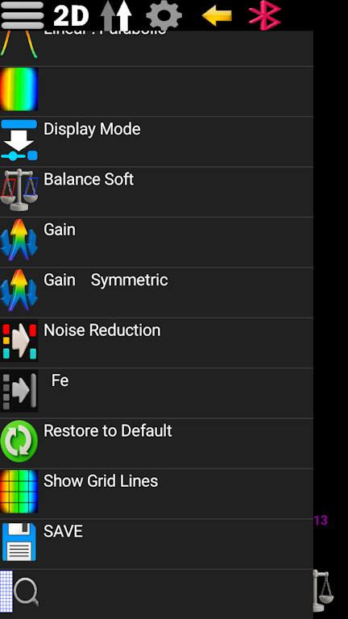
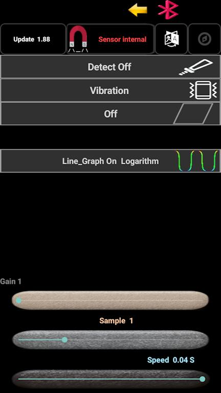
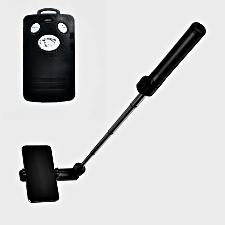
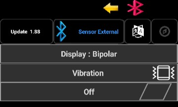

📖 AnyScan209 Official Tutorial
1. Creating a Scan File
AnyScan209 features three main screens. To create a scan, use the longitudinal and transverse bars to set your desired dimensions (min 8x8, max 100). Enter a name at the top if needed and click the "Create Scan" folder. If a new screen doesn't appear, you can proceed to the 3D mode. At the top (left to right), you will find: Open Scan, Export (OBJ, STL, CSV), and Bluetooth transfer. Long-press the Bluetooth icon to adjust transmission speed. Use the "Yellow Arrow" to reach Settings and the Bluetooth icon to manage device pairing. Once paired, the app remembers the device; long-press the icon if you need to refresh the list.

2. Scan Screen Operations
Use the phone's back button or the top arrow to enter the scan screen. The top menu (left to right) includes: New, 2D/3D mode, and scanning direction (Unidirectional/Bidirectional). Use the bottom seek bar to observe values, and the navigation bar to move forward/backward through grid cells. The "Forward/Backward" icons move the cursor without recording; use the "Record" button to log data. Long-press the Record button to enable blinking/timed recording (set speed in Settings); long-press again to exit. For manual value entry, set the sensor to "External" in Settings, return to the scan screen, enter values, and record to correct data.
After scanning, you can choose "Direct Save" (original data) or "Enhanced Save" (signal amplification). You can also save mid-scan via the top menu. Finally, click on the scan file to view it in high resolution.

3. 2D Menu Features
This menu includes: Linear/Parabolic smoothing, step display modes, and 43+ color palettes. You can choose between two signal display modes (full color help). Additional options include: Standard Amplification, Mirrored Amplification, Noise Reduction (removes small anomalies), and Iron Object Detection (detects opposing poles with Single/Dipole modes). Use "Restore" to return to the last save, enable grid lines, or use "Zoom" if scan dimensions are disproportionate.

4. 3D View & Settings
In 3D mode, use the rotation and depth/height seek bars. Long-press the blue seek bar to trigger automatic rotation. The top icon toggles between "Rotate" and "Move" modes; long-press it to show the center point.
3D Menu: Options 1-2 (Navigation), 3 (Default textures), 4 (Custom image from album), 4-5 (Lighting/Shading), 6-10 (Previous settings), 11-14 (Map modes: Top/Bottom/Inverted, etc. - note: geological surveys often use "all values down"), 15-20 (Depth slice, Cross-section, Color filtering, Full/Directional guide, Background). The final option, "Base Plate," allows full/grid display, glass/transparent mode, direction guides, and custom background image settings.

5. General Settings
Accessible from both screens. Top: Update/Version, Sensor Select (Internal/External; long-press Internal for Magnetometer/Altimeter), Language, Compass. Long-press the compass icon for orientation arrows. Essential options: Detector (Beep/Frequency sound), Vibration (feedback), Keep Screen On, and Auxiliary Graphics (Long-press to enable: Sensitivity, Logarithmic, Linear Meter, Mirror Meter, Full Meter). Bottom: 3 seek bars for Gain, Sampling Speed, and Movement Speed (for timed/automatic modes).

Pro Tip:
For better scan quality, you can mount your phone on a standard Selfie Stick. Use a common Bluetooth Selfie Remote to trigger the "Record" button wirelessly. This keeps your hands.

External Mode:
In this mode, you need to activate the external mode in the settings page. Then, using a serial Bluetooth device like HC-05 or an SPP Bluetooth serial module, communicate with the microcontroller to send values between 0 and 1024 to the main device. In magnetometry mode, your balance value is 512. In metal detector mode, as well as altimeter, thermometer, pressure sensor, and others, the standard range is 0 to 1024.

====== Schematic ======

🔌 Microcontroller Integration: BASCOM to Arduino
Original BASCOM Code
$regfile = "m8adef.dat"
$crystal = 8000000
Config Adc = Single , Prescaler = Auto , Reference = Avcc
Enable Interrupts
Config Portc.0 = Input
Config Portc.2 = Output
Dim Insw As Bit
Dim Vale As Word
Do
If Pinc.0 = 0 And Insw = 1 Then
Insw = 0
Portc.2 = 0
End If
If Pinc.0 = 1 And Insw = 0 Then
Portc.2 = 1
Insw = 1
Vale = Getadc(1)
Print Vale
End If
Loop
Converted Arduino C++ Code
// Pin definitions (BASCOM PortC.0 → A1, PortC.2 → Digital pin 2) const int switchPin = A1; // Analog pin 1 (ADC1) const int outputPin = 2; // Digital pin 2 (PortC.2) bool lastSwitchState = false; // Equivalent to "Insw" int analogValue = 0; // Equivalent to "Vale" void setup() { Serial.begin(9600); // Initialize serial communication pinMode(outputPin, OUTPUT); // Set output pin pinMode(switchPin, INPUT); // Set input pin digitalWrite(outputPin, LOW); // Initial output state } void loop() { bool currentSwitchState = digitalRead(switchPin); // When switch changes from HIGH to LOW (pressed) if (currentSwitchState == LOW && lastSwitchState == HIGH) { lastSwitchState = LOW; digitalWrite(outputPin, LOW); } // When switch changes from LOW to HIGH (released) if (currentSwitchState == HIGH && lastSwitchState == LOW) { digitalWrite(outputPin, HIGH); lastSwitchState = HIGH; // Read analog value from pin A1 (0-1023) analogValue = analogRead(A1); // Print value to Serial Monitor (for Bluetooth transmission) Serial.println(analogValue); } }
🔁 Alternative Version with Pull-up Enabled
const int switchPin = A1; const int outputPin = 2; bool lastSwitchState = false; int analogValue = 0; void setup() { Serial.begin(9600); pinMode(outputPin, OUTPUT); pinMode(switchPin, INPUT_PULLUP); // Enable internal pull-up digitalWrite(outputPin, LOW); } void loop() { bool currentSwitchState = digitalRead(switchPin); if (currentSwitchState == LOW && lastSwitchState == HIGH) { lastSwitchState = LOW; digitalWrite(outputPin, LOW); } if (currentSwitchState == HIGH && lastSwitchState == LOW) { digitalWrite(outputPin, HIGH); lastSwitchState = HIGH; analogValue = analogRead(A1); Serial.println(analogValue); // Sends value with CR+LF (\r\n) } }